- магнитные напряжения на ферромагнитном сердечнике и воздушном зазоре, А;
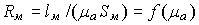 - нелинейное магнитное сопротивление сердечника, 1/Гн;
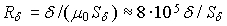 - линейное сопротивление воздушного зазора, 1/Гн;
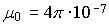 Гн/м - магнитная проницаемость пустоты.
- магнитные напряжения на ферромагнитном сердечнике и воздушном зазоре, А;
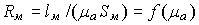 - нелинейное магнитное сопротивление сердечника, 1/Гн;
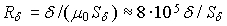 - линейное сопротивление воздушного зазора, 1/Гн;
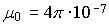 Гн/м - магнитная проницаемость пустоты.2. ПАРАМЕТРЫ СХЕМЫ ЗАМЕЩЕНИЯ МАГНИТНОЙ ЦЕПИ
В данной работе исследуется неразветвлённая неоднородная цепь, имеющая однородный ферромагнитный сердечник и воздушный зазор. Магнитный поток в цепи создаётся МДС F = wI катушки c числом витков w, подключаемой к источнику постоянного или линейно изменяющегося напряжения Uэ (рис. 15.1, а).

В частности, нужно определить
магнитный поток Ф и магнитную индукцию Вδ в воздушном зазоре δ, если известны:
- геометрические размеры (длина lм средней магнитной силовой линии (м. с. л.) и площадь поперечного сечения Sм ферромагнитного сердечника, длина δ воздушного зазора и площадь поперечного сечения Sd @ Sм магнитного потока 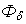 в зазоре);
- магнитные свойства магнитопровода (марка стали и её кривая намагничивания B(H));
- напряжение Uэ источника энергии, число витков w и электрическое сопротивление Rэ катушки.
Необходимо также смоделировать (в среде EWB) магнитную цепь для снятия характеристики 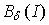 - зависимости магнитной индукции 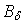 в зазоре от изменения тока I катушки; оценить долю потерь магнитного напряжения на сердечнике и др.
В виду того, что зависимость магнитной индукции В от напряженности магнитного поля H в ферромагнетиках нелинейная, то магнитные цепи, как правило, являются нелинейными, и все расчёты магнитных цепей ведут с определённой степенью точности с использованием графо-аналитических методов.
В основе расчёта магнитных цепей лежит закон полного тока, который для магнитной цепи (рис. 15.1, а) записывают следующим образом:
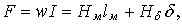
где Нм и lм - напряжённость магнитного поля и длина средней м. с. л. в сердечнике; Нδ и δ - напряжённость магнитного поля и длина воздушного зазора; F = wI - МДС катушки; I – ток в катушке.
Заменив 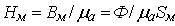 и 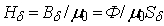, имеем
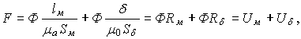
где 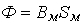 (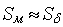 и 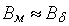) – магнитный поток в сердечнике, Вб;
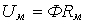 и - магнитные напряжения на ферромагнитном сердечнике и воздушном зазоре, А;
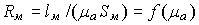 - нелинейное магнитное сопротивление сердечника, 1/Гн;
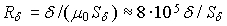 - линейное сопротивление воздушного зазора, 1/Гн;
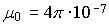 Гн/м - магнитная проницаемость пустоты.
Последнему уравнению соответствует схема замещения магнитной цепи (рис. 15.1, б), состоящая из источника МДС F, нелинейного 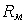 и линейного 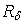 магнитных сопротивлений, на которых магнитный поток Ф "вызывает" падение напряжений 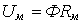 и 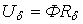.